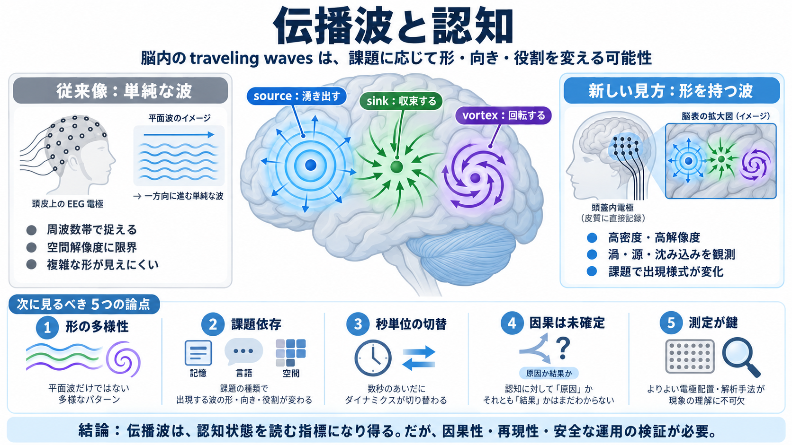

Surprisingly Complex Waves Reveal the Brain’s Inner Workings | Quanta Magazine
September 30, 2026 Unexpected patterns traveling across the cortex may be reorganizing its activity in real time. Read…

頭蓋内計測で観測される「源・沈み込み・渦巻き」が、認知の再編とどう結びつくか。
周波数帯の変化（例：α・β・γ・θ）
空間解像度・局在性が限られ、複雑な時空間パターンが見えにくい
発生点のように波が湧き出す
吸い込まれるように減衰・収束する
回転・渦巻きで統合や変換を示唆
intracranial recordings（頭蓋内計測）
方向・形状の異なる traveling waves
課題タイプでパターンが変わる（符号化⇄想起の切り替えと関連し得る）
背側↔前頭側の方向性（視覚入力→記憶形成など）と結びつく可能性
“ゆっくり変える”回路の仕組みと、“すぐ切り替える”ダイナミクスの橋渡し
波のパターンが情報処理の調整に関与する可能性
波はシナプス活動や同期の反映で、原因とは限らない
刺激・抑制などの介入と、反証可能な解析設計で因果を切り分けること
鏡像的・同期的に回転するパターン
細胞配線（回路配置）が渦形成に寄与する可能性
頭の外からの測定 → 局在性・空間解像度が限られる
脳表近くで高密度に測れる → 時空間パターンの詳細が見えやすい
単なる平面波ではなく source/sink/vortex
言語・空間などでパターンが変わり得る
高速な再配置の候補としての役割
波が原因か結果かを介入で検証する必要
空間スケール・電極配置・サンプル偏りの影響
状態推定・分類に応用できる可能性（ただし再現性が必要）
波＝計算の原因と決めつけず、操作で確かめる姿勢
頭蓋内電極は臨床都合で配置が決まり、代表性を検討
診断補助・状態推定の可能性はあるが、再現性とコストが課題
背側↔前頭、符号化↔想起などは教育的に直感を与える
侵襲的計測は安全・同意・目的の線引きが前提
“Surprisingly Complex Waves Reveal the Brain’s Inner Workings”
“Cortical travelling waves: mechanisms and computational principles”
記事本文で触れられた懐疑的見解（波は同期活動の反映である可能性）や動物研究の補強情報も、上記の議論圏に含まれます。
September 30, 2026 Unexpected patterns traveling across the cortex may be reorganizing its activity in real time. Read…
Travelling waves in neural systems Travelling waves were first observed at the macroscopic, whole-brain scale. More rece…
Traveling waves of neural activity have been observed throughout the brain, spanning a range of scales and brain regions…
### INTRODUCTION Electrical activity in the brain often travels in waves, propagating across networks of neurons in pat…
Recently it was found that cortical oscillations propagate as travelling waves across the surface of the motor cortex al…